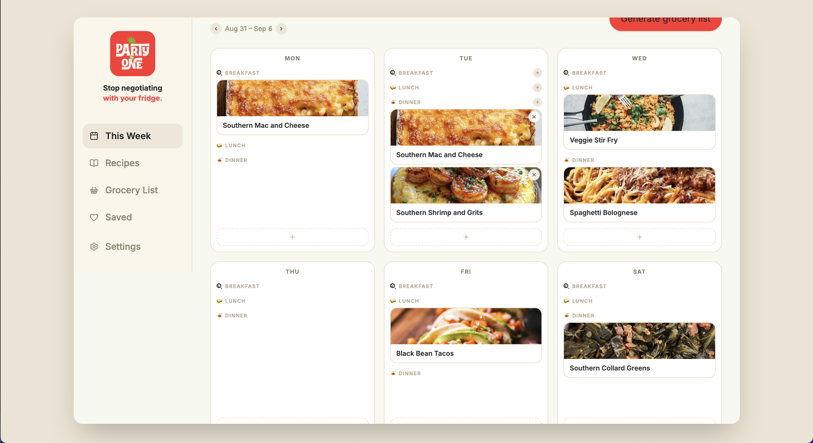
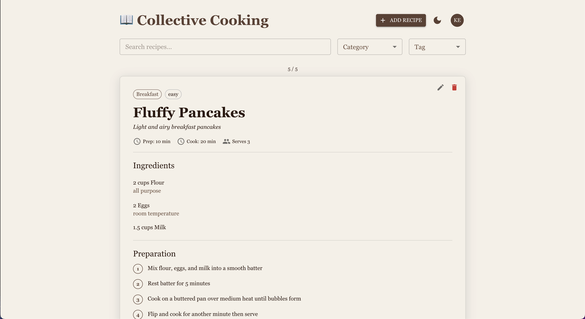

UI / UX

Personal Portfolio
Personal portfolio website designed in Figma. Features a dark theme with flame accents, smooth scroll navigation, and a fully responsive layout.
A collection of UI/UX, Front End, and Back End work
Personal portfolio website designed in Figma. Features a dark theme with flame accents, smooth scroll navigation, and a fully responsive layout.

Website for a small local business. Real Ones Create specialized in marketing and offering services to other local businesses. Some of the services offered were photography/videography, web design/hosting, SEO optimization, digital advertising, content creation, as well as social media management. I created this site to promote these services while also being responsible for the technical services that were provided by the company.

Party of One is a web app that helps a single person plan their meals for the week, browse and save recipes, and automatically generate a grocery list from whatever meals they’ve selected in the app. Instead of juggling recipe screenshots, a mental grocery list, and a running thought of "what am I even eating this week", everything lives in one place: a weekly meal calendar, a photo-driven recipe library, and a shopping-ready grocery list that builds itself from the meals you've chosen.

Collective cooking, a collaborative cookbook. This fully digital cookbook allows a shared resource of cooking material between a group of people. One person is no longer held responsible for the upkeep of recipes that several people or groups use, this is a culmination of cooking recipes and ideas being shared across a group/groups of people.

This was a mobile app created in React Native. All images or videos or from iOS. This app was created to provide mobile detailing and mechanic work for users. The app makes several calls to it's database using GCP to enhance user experience by providing access to an account where information about the user and their vehicle is stored. Using Stripe's API, payments were able to be accepted to provide the user with membership options.

FoodFinder 4110 is an Android based phone app that allows basic functions to be performed that are necessary for the SeeFood API to make the correct decisions. The client performs the necessary actions needed to relay photos and results to and from the AWS. The FoodFinder app is desirable because of its ease-of-use and innovative design.